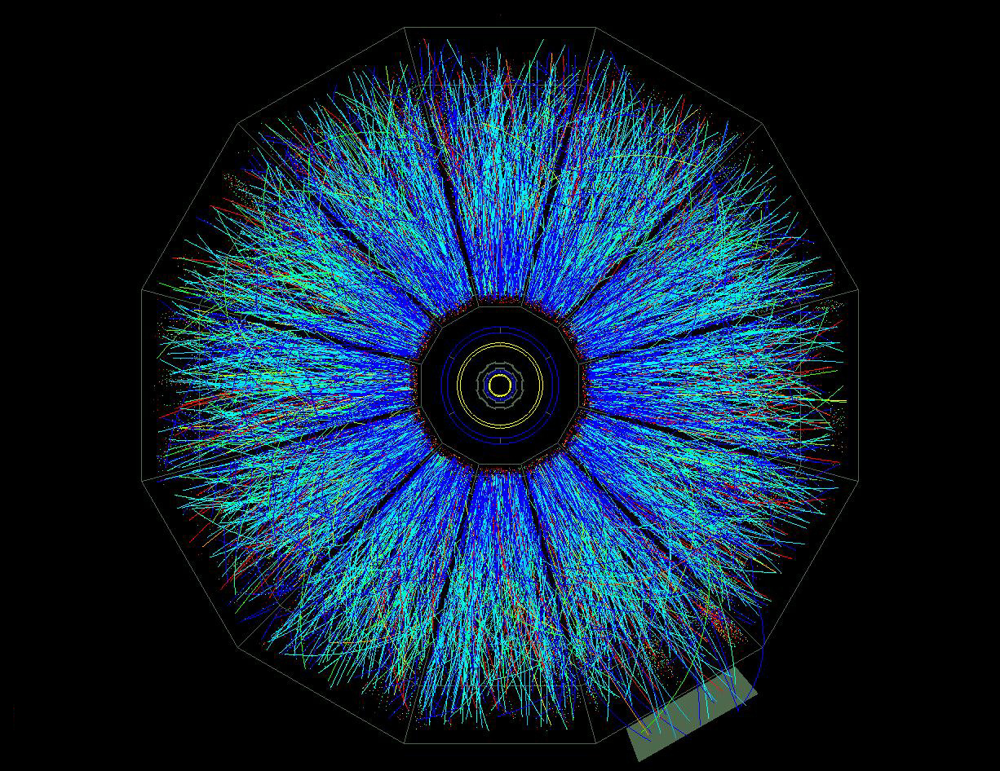

RNC SOFT PHYSICS
GROUP
|
 |
| Home |
Members | Results | Group
page before 2009 |
| The physics interest of the
LBL Soft Physics Group is to study the formation and
characteristics of the medium system created in
relativistic nucleus-nucleus collisions at RHIC
energies, with focus on the single particle momentum
spectra, azimuthal anisotropic distributions, two
particle correlations, heavy flavor and
electromagetic probe production by utilizing the
STAR detector. We are studying/searching for the
MATTER EoS with partonic degrees of freedom:
partonic collectivity, thermalization, and the
temperature of the system created at RHIC. We are
also carrying out the program of exploring the QCD
phase map to search for the first order phase
transition boundary and the possible QCD critical
point. |
|
Quick
Links: STAR, STAR drupal LBL, RNC arXiv, SPIRES, LBL e-journal ROOT, PDG Instruction to Carver |
| Introduction to the LBL
PicoDst Thank you for
your interest in the LBL PicoDst data. Please read
the following instructions carefully and understand
how the PicoDst data were generated. You are
responsible in defending any questions related to
the PicoDst data in your physics analysis. If you
have any questions, please contact Xin Dong
(XDong@lbl.gov), Mustafa Mustafa (mmustafa@lbl.gov)
or Jochen Thaeder (jochen@thaeder.de).
|
PicoDst News:- Sept. 21, 2016: LBL picoDst codes have been
integrated into the STAR library. First release in
CVS, $CVSROOT/StRoot/StPicoDstMaker and
$CVSROOT/StRoot/StPicoEvent. And included in the STAR
library SL16k and beyond. - July 15, 2016: Run14 AuAu200 GeV P15ic production
has been moved to XRootD. Please see below how to
retrieve the file list from XRootD. P16id production
will continue to be populated to /project disk. - Apr. 29, 2016: StPicoDstMaker code was internally
reviewed and released for PWGs to evaluate users need.
It will be used starting from the Run14 AuAu200 GeV
picoDst reproduction. One main change for users to
read picoDst is the trigger Id access functions. We
now store all the trigger Ids into StPicoEvent. The
pre-defined triggerWord is no longer used. - Apr. 29, 2016: Run14 AuAu200 GeV picoDst
reproduction on the P16id dataset has started. - Apr. 20, 2015: All Run10-13 PicoDst data have been
moved to XRootD clusters and removed from project and
eliza disks. Please see the instruction below on how
to obtain the filelist from XRootD. - Mar. 18, 2015: PicoDst production for official
MuDst st_physics stream data started. - Mar. 5, 2015: 2nd round of preview production
started. The first round of preview production data is
removed. New features in StPicoTrack for using HFT
tracking, please refer to this
page. - Jan. 22, 2015: Run14 AuAu 14.5 GeV picoDst production completed and copied to PDSF - Sept. 19, 2014: Run11 pp 500 GeV picoDst data produced and copied to PDSF. - Aug. 29, 2014: Run13 pp 510 GeV picoDst data for the first half dataset (day 076-126) produced and copied to PDSF. - April 26, 2014: Run14 AuAu 14.5 GeV test picoDst
test production is completed. - April 14, 2014: We did a re-shuffling of all the
picoDsts for Run10, 11 and 12 due to the retirement of
some eliza disks. The following data list the
locations of all current data - May 31, 2013: Run10 39 GeV picoDst data duplicated
on /project area. Data on local eliza disks are still
there. - Apr. 15, 2013: Run12 pp200 GeV (P12id) picoDst
production completed. Data are currently located on
the /project disk. - Mar. 01, 2013: All Run10/11 picoDst data have been
copied to Xrootd cluster (small issue on the
consistency for 27 GeV data to be investigated). - Feb. 06, 2013: It was found that two days of
picoDst data from Run10 39 GeV (day 105, 107) and
Run11 27 GeV (day 172, 176) separately were duplicated
on eliza3 and eliza9 disks. The duplicated copies
appeared on the eliza9 disk since roughly end of Jan
2012 when the eliza3 disk turned extremely slow and
didn't get removed later on. If you are analyzing
these data sets, please make sure your analysis is not
affected by double-counting some events due to this
issue. These duplicated copies on the eliza9 disk have
been removed. |
Introduction:The LBL PicoDst is created for general physics analysis that are being carried out by the RNC soft physics group. It is a ROOT-tree-like format data generated from the STAR standard MuDst data. The PicoDst data are produced, stored and archieved by this group.All current source codes, scripts are maintained in the RCF CVS area. Here is a README file. $CVSROOT/offline/users/dongx/pico/README The latest source code location is: $CVSROOT/offline/users/dongx/pico/source |
All the source codes used for production for various data sets are located here: $CVSROOT/offline/users/dongx/pico/prod Two ways to read the picoDst data: 1) (Recommended) Use the StPicoDstMaker. An example is located here $CVSROOT/offline/users/dongx/pico/read One need to check out the latest source code of StPicoDstMaker from $CVSROOT/offline/users/dongx/pico/source. Move the example maker under read/ directory - StMyAnalysisMaker and StPicoDstMaker under StRoot/ in your working directory and compile them. Then use the readPicoDst.C macro to read picoDst data. 2) Since the PicoDst is in ROOT-tree-like format, in principle, one can do MakeClass() and write your own analysis function which doesn't depend on StPicoDstMaker. But one has to be careful about details how the variables in PicoDst are calculated. You can always go back to the production source code to find the exact details. The following table lists the location of all LBNL picoDst data at PDSF. For those that are on XRootD cluster, use the following instruction to create file lists from XRootD Create XRootD file lists at
PDSF
1.) Load
proper modules
$ module load
python/3.4.3
$ module use
/common/star/pkg/Modules
$ module load
star-dm-scripts
2.) Use
the starquery tool to create a file list
3.) Use file
lists like regular file lists
|
| Year |
System |
Location |
Size(TB) |
Comment |
| Run10 year 2010 |
Au+Au
@ 200 GeV |
XRootD |
13.2/19.8 |
st_physics, MinBias/Central separated |
| Au+Au @ 62.4 GeV |
XRootD |
4.9 |
st_physics, st_ht,
st_pmdftp |
|
| Au+Au
@ 39 GeV |
XRootD |
3.8 |
st_physics, st_ht,
st_pmdftp |
|
| Au+Au
@ 11.5 GeV |
XRootD |
0.4 |
st_physics |
|
| Au+Au
@ 7.7 GeV |
XRootD |
0.1 |
st_physics |
|
Run11 year 2011 |
Au+Au
@ 19.6 GeV |
XRootD |
1.1 |
st_physics, st_ht,
st_pmdftp |
| Au+Au @ 27 GeV |
XRootD |
1.9 |
st_physics, st_ht, st_pmdftp | |
| Au+Au @ 200 GeV |
XRootD |
16.9 |
st_physics |
|
| p+p @ 500 GeV |
XRootD | 0.7 |
st_physics |
|
| Run12 year 2012 |
p+p @ 200 GeV |
XRootD | 13 |
st_physics |
| Run13 year 2013 |
p+p @ 510 GeV |
XRootD | 1.0 |
st_physics |
| Run14 year 2014 |
Au+Au @ 14.5 GeV |
/project/projectdirs/starprod/picodsts/Run14/AuAu/15GeV/all/P14ii | 2.6 |
st_physics |
| Au+Au @ 200 GeV
(P15ic) |
XRootD | st_physics |
||
| Au+Au @ 200 GeV
(P16id) |
/project/projectdirs/starprod/picodsts/Run14/AuAu/200GeV/physics2/P16id | st_physics |
||
TriggerWord Definition:
|
As
described above, we recommend users to use the
StPicoDstMaker to read the picoDst. The trigger
selection user functions are well maintained.
e.g. to select minbias triggers, one just asks
for StPicoEvent::isMinBias() to be true.
For some "naughty" users who want to read the picoDst as a tree, one has to rely on the variable Event.mTriggerWord in the picoDst. This variable is defined bit-wise containing the information whether the current event satisfies selected triggers. The following table defines the corresponding trigger Id for each bit. For example, in AuAu 39GeV, if I have an event with mTriggerWord = 101 (bit-wise), this means this event satisfies both mb (280001) and ht-11 (280501) triggers. |
| Year |
Datasets |
mTriggerWord: <highest>
ponm lkji hgfe dcba <lowest> Run13 pp510 GeV - changed to Int_t type - 32 bits |
Comment |
| Run10 year 2010 |
Au+Au
@ 200 GeV MinBias |
a:
260001 - mb b: 260011 - mb c: 260021 - mb d: 260031 - mb |
All entries in
this dataset are minbias events |
| Au+Au
@ 200 GeV Central |
a:
260101 - central b: 260103 - central c: 260113 - central d: 260123 - central |
All entries in
this dataset are central events |
|
| Au+Au
@ 62.4 GeV |
a:
270001 - mb b: 270011 - mb c: 270021 - mb d: 270005 - mb-slow e: 27101 - central f: 270501 - ht-11-mb g: 270511 - ht-11-mb h: 270521 - ht-11-mb i: 270503 - ht-15 |
||
| Au+Au
@ 39 GeV |
a:
280001 - mb b: 280002 - mbslow c: 280501 - ht-11 |
||
| Au+Au
@ 11.5 GeV |
a:
310004 - mb b: 310014 - mb c: 310003 - mb-slow-bbc d: 310013 - mb-slow-bbc e: 310054 - vpd-tac f: 310002 - vpd-tac-slow g: 310070 - tof-150-fast h: 310060 - tof-150-slow i: 310170 - tof-200-fast j: 310061 - tof-200-slow |
||
| Au+Au
@ 7.7 GeV |
a:
290001 - mb b: 290004 - mb c: 290003 - mb-slow-bbc d: 290501 - ht-11 e: 290053 - vpd-tac f: 290054 - vpd-tac g: 290002 - vpd-tac-slow h: 290070 - tof-150-fast i: 290060 - tof-150-slow |
||
Run11 year 2011 |
Au+Au
@ 19.6 GeV |
a:
340001 - mb1-fast b: 340011 - mb1-fast c: 340021 - mb1-fast d: 340002 - mb2-slow e: 340012 - mb2-slow f: 340022 - mb2-slow g: 340500 - ht-11 h: 340300 - tof-200-fast i: 340301 - tof-250-slow j: 340068 - bbc-large-tof-fast k: 340069 - bbc-large-tof-slow |
|
| Au+Au
@ 27 GeV |
a:
360001 - mb1-fast b: 360002 - mb2-slow c: 360500 - ht-11 d: 360300 - tof-550-fast e: 360301 - tof-550-slow |
||
| Au+Au
@ 200 GeV |
a:
350001 - vpd-zdc-mb b: 350011 - vpd-zdc-mb c: 350003 - vpd-zdc-mb-protected d: 350013 - vpd-zdc-mb-protected e: 350023 - vpd-zdc-mb-protected f: 350033 - vpd-zdc-mb-protected g: 350043 - vpd-zdc-mb-protected |
All entries in
this dataset are minbias event. StPicoEvent:isMinBias() function returns only vpd-zdc-mb-protected triggers |
|
| p+p @ 500 GeV |
a:
320000 // VPDMB b: 320001 // VPDMB c: 320011 // VPDMB d: 320021 // VPDMB e: 330021 // VPDMB f: 320103 // BBCMB g: 320113 // BBCMB h: 320123 // BBCMB i: 330123 // BBCMB j: 320500 // BHT0*VPDMB k: 320504 // BHT0*VPDMB l: 320514 // BHT0*VPDMB m: 320524 // BHT0*VPDMB n: 330524 // BHT0*VPDMB o: 320501 // BHT1 p: 330501 // BHT1 q: 320503 // BHT2 r: 330503 // BHT2 |
||
| Run12 year 2012 |
p+p @ 200 GeV |
a:
370011 - vpdmb -nobsmd b: 370001 - vpdmb c: 370022 - bbcmb d: 370501 - bht0 -vpdmb e: 370511 - bht1 -vpdmb f: 370531 - bht2 g: 370542 - bht0 -bbcmb -tof0 h: 370546 - bht1 -bbcmb -tof0 i: 370522 - bht2 -bbcmb j: 370601 - jp0 k: 370611 - jp1 l: 370621 - jp2 m: 370641 - ajp n: 370301 - bbcmb -tof0 o: 370361 - tofmult3 -vpd p: 370341 - tofmult4 |
PicoCuts::passEvent()
removed |
| Run13 year 2013 |
p+p @ 510 GeV | a:
430001, // VPDMB b: 430011, // VPDMB c: 430021, // VPDMB d: 430031, // VPDMB e: 430005, // BBCMB f: 430015, // BBCMB g: 430004, // ZDCMB h: 430201, // BHT0*BBCMB*TOF0 i: 430211, // BHT0*BBCMB*TOF0 j: 430202, // BHT0*VPD k: 430222, // BHT0*VPD l: 430232, // BHT0*VPD m: 430203, // BHT1*VPDMB n: 430223, // BHT1*VPDMB o: 430243, // BHT1*VPDMB p: 430204, // BHT2 q: 430207, // BHT2*BBCMB r: 430216, // BHT3 s 430236 // BHT3 |
|
| Run14 year 2014 |
Au+Au @ 14.5 GeV |
a:
440001, // VPD_mb b: 440004, // ZDC-mb c: 440005, // BBC_mb d: 440006, // bbc_mon_tof e: 440007, // tofmult4 f: 440015, // BBC_mb g: 440016, // bbc_mon_tof h: 440017 // tofmult4 |
PicoCuts::passEvent() removed |
| Au+Au @ 200 GeV -
P15ic |
// st_physics stream 450050, // vpdmb-5-p-nobsmd-hlt 450060, // vpdmb-5-p-nobsmd-hlt 450005, // vpdmb-5-p-nobsmd 450015, // vpdmb-5-p-nobsmd 450025, // vpdmb-5-p-nobsmd 450014, // VPDMB-5-nobsmd 450024, // VPDMB-5-nobsmd 450008, // VPDMB-5 450018, // VPDMB-5 450010, // VPDMB-30 450020, // VPDMB-30 450013, // VPD-ZDC-novtx-mon 450023, // VPD-ZDC-novtx-mon 450009, // vpdmb-5-p-nobsmd-ssd-hlt 450012, // ZDC-mon 450022, // ZDC-mon 450011, // MB-mon 450021, // MB-mon 450103, // Central-5 450201, // BHT1*VPDMB-30 450211, // BHT1*VPDMB-30 450202, // BHT2*VPDMB-30 450212, // BHT2*VPDMB-30 450203, // BHT3 450213 // BHT3 |
|
|
Starting from April 29, 2016, the picoDst reproduction for P16id Run14 AuAu200 GeV st_physics dataset, we no longer use the pre-defined triggerWords in StPicoEvent. Instead, StTriggerIdCollection (collection of triggerIds that each event fires) are copied directly to StPicoEvent. |
|||
Event/Track Cuts Placed When Producing PicoDst:
|
In
the following table, we list all the event/track
cuts that has been placed when producing the
picoDst data from MuDst. One should be aware of
these cuts when doing analysis, particularly
when evaluating the efficiencies.
In all data sets, the default trigger requirement is the event need to satisfy at least one of the listed triggers in the previous table.i.e. TriggerWord should be NOT zero. |
| Year |
Datasets |
Event Wise Selection |
Track Selection |
| Run10 year 2010 |
Au+Au
@
200 GeV MinBias |
! (Vx==0 && Vy==0 && Vz==0) |Vz|<100cm RefMult>=1 |
all global tracks 0<=flag<=1000 pT (global) > 0.1 GeV/c if(flag<700) { // TPC track nHitsFit(kTpcId)>=15 nHitsFit(kTpcId)/nHitsPoss(kTpcId)>0.52 } else { // FTPC track nHitsFit(ftpc)>=5 nHitsFit(ftpc)/nHitsPoss(ftpc)>0.52 } |
| Au+Au
@
200 GeV Central |
|||
| Au+Au
@
62.4 GeV |
|||
| Au+Au
@
39 GeV |
|||
| Au+Au
@
11.5 GeV |
! (Vx==0 && Vy==0
&& Vz==0) |Vz|<100cm sqrt(Vx*Vx+Vy*Vy)<2cm RefMult>=1 |
||
| Au+Au
@
7.7 GeV |
|||
Run11 year 2011 |
Au+Au
@
19.6 GeV |
||
| Au+Au
@
27 GeV |
|||
| Au+Au
@
200 GeV |
|||
| p+p @ 500 GeV |
! (Vx==0 && Vy==0 &&
Vz==0) |Vz|<100cm sqrt(Vx*Vx+Vy*Vy)<2cm RefMult>=0 |
||
| Run12 year 2012 |
p+p @ 200 GeV |
None |
|
| Run13 year 2013 |
p+p @ 510 GeV | ! (Vx==0 && Vy==0 &&
Vz==0) |Vz|<100cm sqrt(Vx*Vx+Vy*Vy)<2cm RefMult>=0 |
|
| Run14 year 2014 |
Au+Au @ 14.5 GeV |
None |
all global tracks 0<=flag<=1000 pT (global) > 0.01 GeV/c |
| Au+Au @ 200 GeV |
All
events. Events that don't satisfy following cuts
will only have the PicoEvent information ! (Vx==0 && Vy==0 && Vz==0) |Vz|<100cm sqrt(Vx*Vx+Vy*Vy)<2cm RefMult>=0 Primary vertex selected to be correlated with VzVpd by |Vz-VzVpd|<3cm if VzVpd is available |
all global tracks 0<=flag<=1000 pT (global) > 0.1 GeV/c gDca<10cm |
|